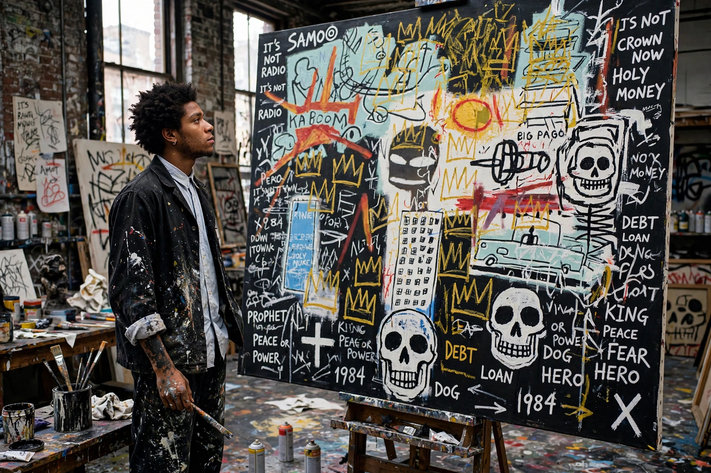

Jean-Michel Basquiat
From Wikipedia, the free encyclopedia

Jean-Michel Basquiat (22 December 1960 – 12 August 1988) was an American artist who rose to success during the 1980s as part of the Neo-expressionism movement. Beginning as one half of the graffiti duo SAMO in New York, he became an international art star whose paintings — fusing drawing, writing, collage, Black history and anatomy — now command some of the highest prices ever paid for an American artist. He died of a heroin overdose at 27.
Rise
Of Haitian and Puerto Rican descent, Basquiat grew up in Brooklyn, left home as a teenager and tagged SAMO's epigrams across SoHo ('SAMO as an end to mindwash religion, nowhere politics and bogus philosophy'). The 1981 'New York/New Wave' show launched him into galleries; by 1982 — after a fevered year painting in dealer Annina Nosei's basement — he was showing with the era's top dealers, collaborating with Andy Warhol (1984–85) and appearing on magazine covers, the only Black painter in a white art world whose racism his work dissected.
Art
Basquiat's canvases layer crowns (his signature, marking Black kings and martyred heroes), skulls, boxers and jazz musicians (Charlie Parker, a hero), anatomical diagrams absorbed from a childhood gift of Gray's Anatomy after a car accident, and lists of words crossed out 'to make you look at them'. Works like Irony of Negro Policeman, Horn Players and Hollywood Africans interrogate power, slavery's economics and art-world tokenism.
Death and market
Addiction and the grief of Warhol's death (1987) preceded his own fatal overdose in 1988. His posthumous market is immense: Untitled (1982, the 'Skull' painting) sold for US$110.5 million in 2017, then a record for an American artist — feeding debate about the commodification of an artist who painted against commodification.